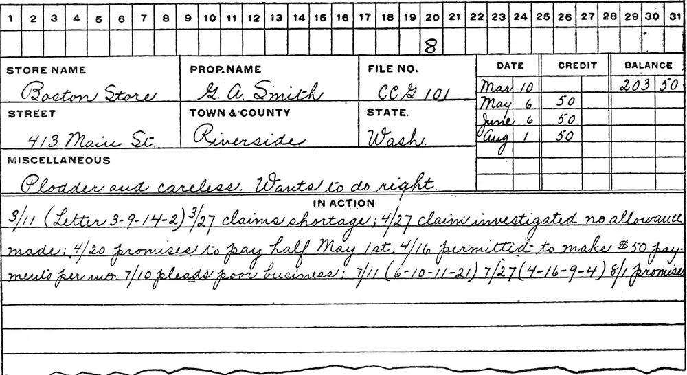

Түсінікті
- Бос тапсырманы тексеруді қосу
- Қате құпиясөзбен кіруді түзету
Git код нұсқаларын есте сақтайды, жұмыс істейтін күйге қайтуға және бірлесіп жұмыс істеуге мүмкіндік береді. GitHub — осындай жобалардың көшірмелері сақталатын сайт.

Коммит — жобаның түсінікті сипаттамасы бар сақталған суреті.
git config --global user.name "Ваше Имя"
git config --global user.email "you@example.com"
git config --global init.defaultBranch maingit init
git status
git add app.py
git commit -m "Добавить главную страницу"
git log --onelinegit add командасы оны болашақ коммитке қосты.git commit командасы суретті тарихқа жазды..gitignore файлы Git бақыламауы керек нәрселерді тізіп шығады.
.venv/
__pycache__/
*.db
db.sqlite3
.envҚұпиясөз немесе кілт GitHub-тағы коммитке түсіп қойса, файлды жай жою жеткіліксіз: ол тарихта қалады. Кілтті ашылған деп есептеп, жаңасына ауыстырыңыз.
Тармақ жаңа функцияны бөлек жасауға және жұмыс істейтін нұсқаны бұзбауға мүмкіндік береді.
git switch -c search-form
git add .
git commit -m "Добавить форму поиска"
git switch main
git merge search-form
git branch -d search-formҚақтығыс екі тармақтың бір жолды өзгерткенін білдіреді. Файлды ашып, қажетті нұсқаны қалдырыңыз да, <<<<<<<, ======= және >>>>>>> белгілерін өшіріңіз, содан кейін git add және git commit орындаңыз.
Алдымен github.com сайтында бос репозиторий жасаңыз.
git remote add origin https://github.com/USER/REPO.git
git push -u origin maingit pull
git add .
git commit -m "Исправить форму входа"
git pushБолдырмас алдында ағымдағы күйді git status арқылы қараңыз.
| Жағдай | Команда | Маңызды |
|---|---|---|
| Файлды дайындалғандардан алып тастау | git restore --staged app.py | Файлдағы түзетулер қалады |
| Файлдағы түзетулерді болдырмау | git restore app.py | Сақталмаған түзетулер мүлдем жоғалады |
| Жіберіліп қойған коммитті болдырмау | git revert abc1234 | Жаңа коммит жасайды, тарих бұзылмайды |
| Соңғы коммиттің мәтінін түзету | git commit --amend | Тек коммит әлі жіберілмеген болса |
git reset --hard және git push --force командалары жұмысты қайтарылмастай жоюы мүмкін. Жаңадан бастаушыға оларсыз жұмыс істеген дұрыс.
Не өзгергенін және не үшін өзгергенін сипаттаңыз. Бір айдан кейін тарихты жобаның күнделігі сияқты оқитын боласыз.
Сілтемелер тексерілді.
GitHub-тағы код дайын. Сайтты интернетке шығару ғана қалды.